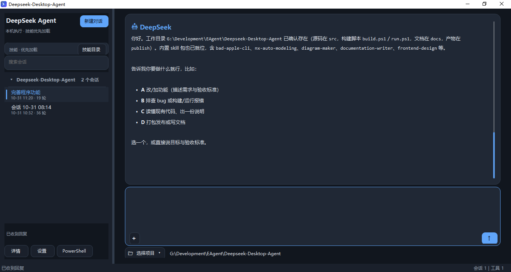

Weekly Update · 2026 W44 · 10.25 — 10.31
本周更新
侧栏与会话落地，DeepSeek 网页默认后台隐藏，v1.5.1 修掉输入卡住、发送静默与多任务串台。下面的界面都来自真实运行，不是概念稿。
7次提交
9项修复
1个版本发布
01
侧栏与会话
会话按项目归档，点开即按会话切回对应的 DeepSeek 网页，不再重开新对话。

真实运行界面 · v1.5.1 · 本地实拍
- 会话列表按项目分组，显示时间与轮次
- 搜索会话直接过滤，技能目录优先加载本机技能
- 详情 / 设置 / PowerShell 收在左下角
- 旧会话缺少网页地址时，自动重新注入系统提示词与技能
02
网页后台隐藏
DeepSeek 网页默认在后台运行，需要时才显示，窗口被关掉也能自动恢复。
- 默认隐藏，不抢焦点；点「显示网页会话」才以独立窗口弹出
- watchdog 每 500ms 刷新运行状态，窗口被关闭后自动恢复连接
- 详情页明确显示：未启动 / 启动中 / 恢复中 / 后台隐藏 / 窗口已显示 / 调试连接断开
03
输入不再卡住
v1.5.1 把输入、发送、附件、快捷键四条路径逐一兜底。
三级兜底
textarea → contenteditable → role=textbox，过滤不可见节点，并带诊断信息。
发送不再静默
回车送不出去就改按按钮，按钮也找不到则立即报错并兜底回车。
附件顺序
先确认输入框可用，再上传附件，避免传完才发现不能输入。
Ctrl+Enter
按焦点分派：对话页发送消息，会话页接续会话，其他控件不误触。
04
多任务不再串台
每轮运行绑定发起时的会话，切走浏览也不会把结果写进当前窗口。
- 流式输出、滚动与最终结果写回发起会话
- 排队消息绑定会话与工作目录，按顺序切回对应网页执行
- 红色急停中断当前 PowerShell 任务，后续消息仍保留在队列
05
复盘与下周
问题不回避，下周按优先级收口。
本周问题
- 输入框与 watchdog 仍有边界状态需要连续跑测
- 多会话与队列刚修复，缺少长时间稳定性验证
- 网页关闭后的恢复路径还需更多真机场景
下周计划
- 连续跑测：多会话、队列、重启恢复
- 详情页补充运行状态与诊断信息
- 宣传片投放，回收首轮数据
视频版周报：39 秒，1920 × 1080。画面使用真实运行截图，未使用概念界面。